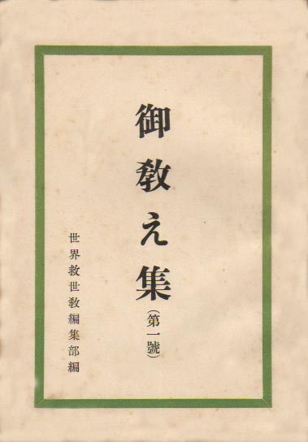

――― 岡
田 自 観 師 の 論 文 集 ――発行誌別
御教え集（第一号～第三十三号)
 |
御教え集（第一号） 昭和26年 9月20日発行 Ｂ６版 編 集 世界救世教編集部 発行人 阿部 晴三 発行所 世界救世教出版部 参拝日面会時の記録 |
||
|
|||
| ＮＯ． | 発行年月日 |
御参拝日御教え 収録日 |
岡田茂吉全集 |
| 第１号 | S26. 9.20 | S26年８月１･５･８･11･16･18･21･25･28日 | 講話篇 4-405 |
| 第２号 | S26.10.25 | S26年９月１･５･８･11･15･18･21･23･24･25･26･27日 | 講話篇 4-477 |
| 第３号 | S26.11.25 | S26年10月１･５･８･11･15･18･21･25･28日 | 講話篇 5- 7 |
| 第４号 | S26.12.15 | S26年11月１･５･８･11･15･18･21･25･28日 | 講話篇 5-104 |
| 第５号 | S27. 1.15 | S26年12月１･６･８･11･15･18･21･23･25･28日 | 講話篇 5-197 |
| 第６号 | S27. 2.25 | S27年１月１･２･３･５･６･７･15･16･17･25･26･27日 | 講話篇 6-333 |
| 第７号 | S27. 3.20 | S27年２月５･６･７･15･16･17･25･26･27日 | 講話篇 7- 7 |
| 第８号 | S27. 4.20 | S27年３月５･６･７･15･16･17･23･24･25･26･27日 | 講話篇 7- 91 |
| 第９号 | S27. 5.15 | S27年４月５･６･７･15･16･17･25･26･27･30日 | 講話篇 7-212 |
| 第10号 | S27. 6.15 | S27年５月５･６･７･15･16･17･25･26･27日 | 講話篇 7-271 |
| 第11号 | S27. 7.15 | S27年６月５･６･７･15･16･17･25･26･27日 | 講話篇 7-331 |
| 第12号 | S27. 8.15 | S27年７月５･６･７･15･16･17･25･26･27日 | 講話篇 7-411 |
| 第13号 | S27. 9.25 | S27年８月５･６･７･15･16･17･25･26･27日 | 講話篇 8- 7 |
| 第14号 | S27.10.15 | S27年９月５･６･７･15･16･17･23･24･25･26･27日 | 講話篇 8- 60 |
| 第15号 | S27.11.15 | S27年10月５･６･７･15･16･17･18･20･25･26･27日 | 講話篇 8-128 |
| 第16号 | S27.12.15 | S27年11月５･６･７･15･16･17･25･26･27日 | 講話篇 8-180 |
| 第17号 | S28. 1.15 | S27年12月５･６･７･15･16･17･23･25･26･27日 | 講話篇 8-230 |
| 第18号 | S28. 2.15 | S28年１月１･２･３･５･６･７･15･16･17･25･26･27日 | 講話篇 9-317 |
| 第19号 | S28. 3.15 | S28年２月５･６･７･15･16･17･25･26･27日 | 講話篇10- 7 |
| 第20号 | S28. 4.15 | S28年３月５･６･７･15･16･17･23･24･25･26･27日 | 講話篇10- 59 |
| 第21号 | S28. 5.15 | S28年４月５･６･７･８･10･15･16･17･25･26･27日 | 講話篇10-134 |
| 第22号 | S28. 6.15 | S28年５月５･６･７･15･16･17･25･26･27日 | 講話篇10-205 |
| 第23号 | S28. 7.15 | S28年６月５･６･７･15･16･17･25･26･27日 | 講話篇10-261 |
| 第24号 | S28. 8.15 | S28年７月５･６･７･15･16･17･25･26･27日 | 講話篇10-330 |
| 第25号 | S28. 9.15 | S28年８月５･６･７･15･16･17･25･26･27日 | 講話篇11- 7 |
| 第26号 | S28.10.15 | S28年９月５･６･７･15･16･17･23･24･25･26･27日 | 講話篇11- 63 |
| 第27号 | S28.11.15 | S28年10月５･６･７･15･16･17･25･26･27日 | 講話篇11-142 |
| 第28号 | S28.12.15 | S28年11月５･６･７･８･10･11･15･16･17･25･26･27日 | 講話篇11-193 |
| 第29号 | S29. 1.15 | S28年12月５･６･７･15･16･17･23･25･26･27日 | 講話篇11-271 |
| 第30号 | S29. 2.15 | S29年１月１･２･３･５･６･７･15･16･17･25･26･27日 | 講話篇12- 99 |
| 第31号 | S29. 3.15 | S29年２月４･５･６･７･15･16･17･25･26･27日 | 講話篇12-174 |
| 第32号 | S29. 4.15 | S29年３月５･６･７･15･16･17･23･24･25･26･27日 | 講話篇12-237 |
| 第33号 | S29. 5.15 | S29年４月５･６･７･11･12･15･16･17日 | 講話篇12-314 |